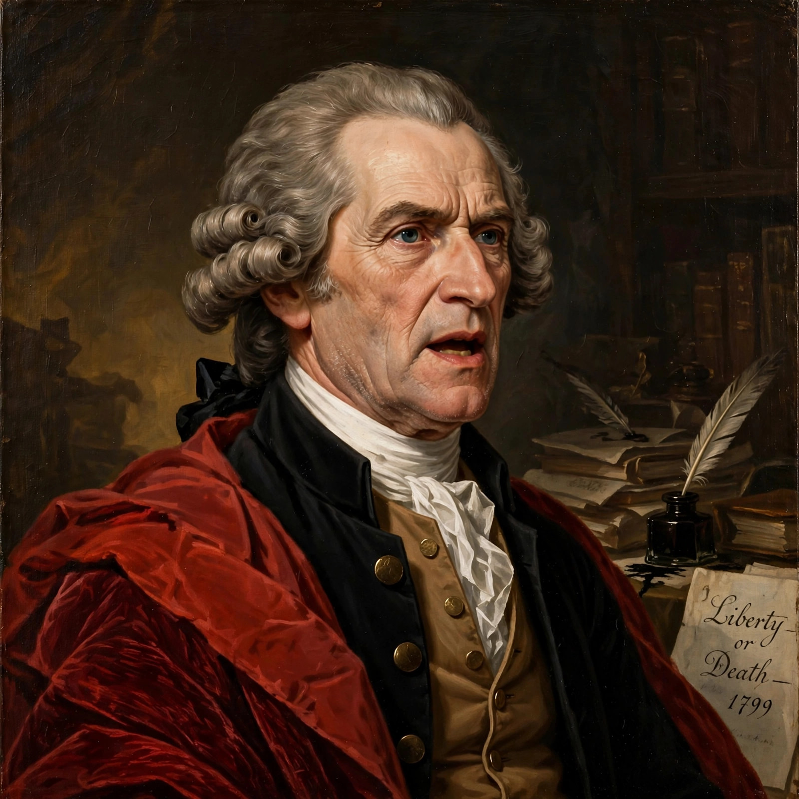

Anti-Federalism was a late-eighteenth-century political movement that opposed the creation of a stronger United States federal government and the ratification of the 1787 Constitution, fearing that a consolidated national government would become tyrannical and extinguish the states and individual liberties. Anti-Federalists lost the ratification struggle but secured the adoption of the Bill of Rights, and their arguments about representation, standing armies, taxation and the necessary smallness of republics have remained influential in American political thought.
Anti-Federalists were a loose coalition rather than a party: they included small farmers, state politicians jealous of their authority, and prominent patriots such as Patrick Henry, George Mason, Elbridge Gerry, Richard Henry Lee and (ambivalently) Samuel Adams. Writing under pseudonyms such as "Brutus", "Cato" and the "Federal Farmer", they produced the Anti-Federalist Papers in reply to The Federalist.
Their principal objections were:
Opposition was strongest in large states whose votes were essential — Virginia, New York, Massachusetts and North Carolina (which initially voted to adjourn without ratifying, and Rhode Island, which ratified only in 1790 under pressure). In Massachusetts, Federalists defused the opposition through the compromise of ratifying while recommending amendments — the "Massachusetts compromise" — a model followed in Virginia and New York. The promise of amendments led directly to the First Congress's adoption of the Bill of Rights in 1789, including amendments reflecting Anti-Federalist commitments, such as the Ninth and Tenth Amendments and the militia language of the Second Amendment.
After ratification, many Anti-Federalists migrated into the Democratic-Republican opposition of the 1790s. Their tradition persisted in American politics in ideologies of states' rights, strict construction and suspicion of centralised power, and modern scholarship — beginning with Herbert Storing's What the Anti-Federalists Were For — has treated them as serious political theorists rather than mere obstructionists.
From Wikipedia, the free encyclopedia.